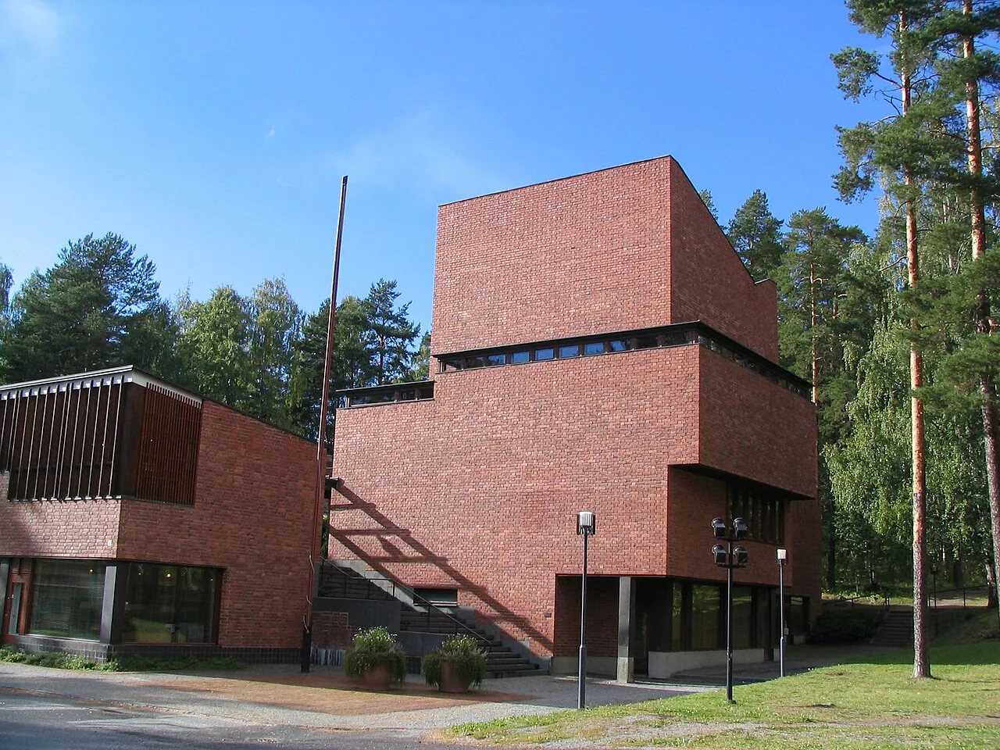
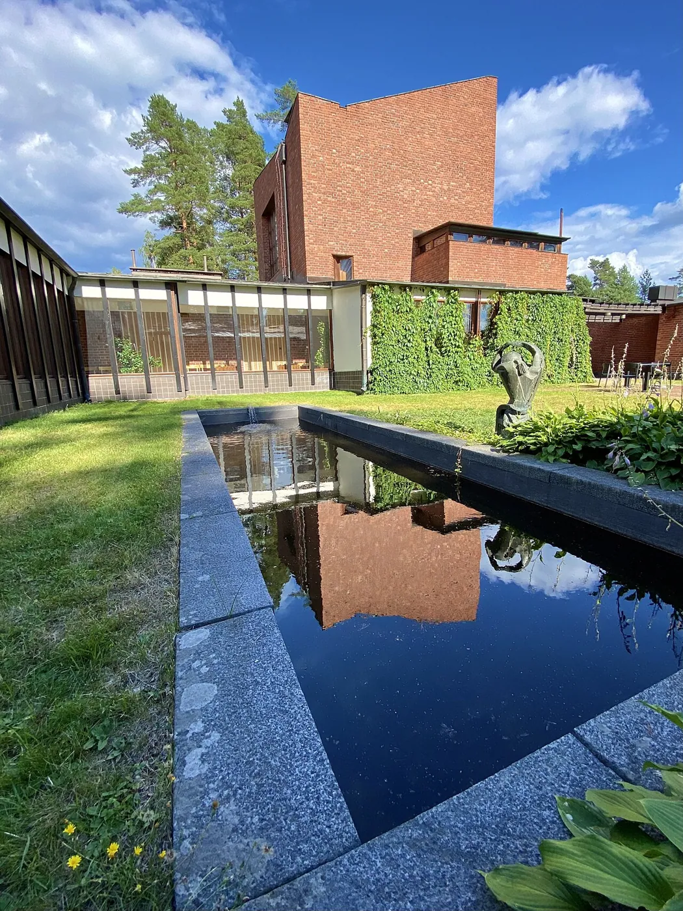
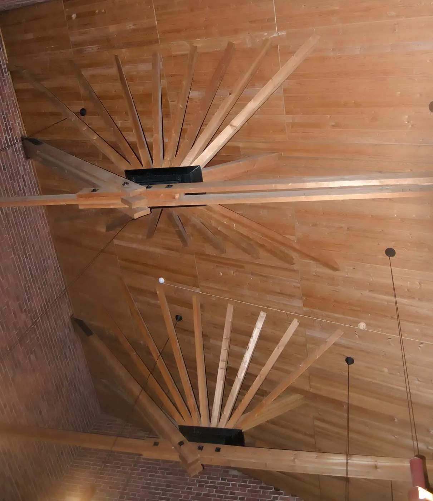

1/8 · Exterior · Säynätsalo town hall, JyväskyläPhoto: Tiia Monto · CC BY-SA 3.0 · source2/8 · Exterior · Säynätsalo town hall grass stairsPhoto: Alexignat · CC BY-SA 4.0 · source

3/8 · Exterior · Säynätsalo town hall and library, Jyväskylä, FinlandPhoto: Zache · CC BY-SA 3.0 · source

4/8 · Exterior · Säynätsalo town hall courtyardPhoto: Alexignat · CC BY-SA 4.0 · source5/8 · Interior · View from the back of the council chamber of Säynätsalo Town Hall in Jyväskylä, Finland towards its frontPhoto: Antti Leppänen · CC BY 4.0 · source6/8 · InteriorPhoto: Mikkoau · CC BY-SA 4.0 · source

7/8 · Detail · Rafters in the ceiling of the council chamber of Säynätsalo town hall in Jyväskylä, FinlandPhoto: Antti Leppänen · CC BY 4.0 · sourcePhotos unavailable8/8丘崈 · CC0 · source